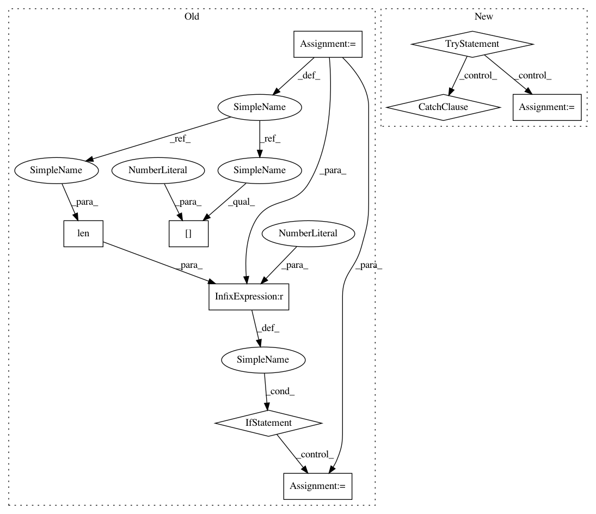

1666e3ac5a46912b5e16f452e39bfdcf028e59ae,hyperspy/io_plugins/usid_hdf5.py,,_get_dim_dict,#Any#Any#Any#Any#,38
Before Change
// Empty dimension!
continue
else:
step_size = np.unique(np.diff(dim_vals))
if len(step_size) > 1:
// often we end up here. In most cases,
step_avg = step_size.max()
step_size -= step_avg
var = np.mean(np.abs(step_size))
if var / step_avg < 1E-3:
step_size = [step_avg]
else:
// Non-linear dimension! - see notes above
if ignore_non_linear_dims:
warn("Ignoring non-linearity of dimension: "
"{}".format(dim_name))
step_size = [1]
dim_vals[0] = 0
else:
raise ValueError("Cannot load provided dataset. "
"Parameter: {} was varied "
"non-linearly. Supply keyword "
"argument "ignore_non_linear_dims="
"True" to ignore this "
"error".format(dim_name))
step_size = step_size[0]
dim_dict[dim_name] = {"size": len(dim_vals),
"name": dim_name,
"units": units,
"scale": step_size,
After Change
// Empty dimension!
continue
else:
try:
step_size = usid.write_utils.get_slope(dim_vals)
except ValueError:
// Non-linear dimension! - see notes above
if ignore_non_linear_dims:
warn("Ignoring non-linearity of dimension: "
"{}".format(dim_name))
step_size = 1
dim_vals[0] = 0
else:
raise ValueError("Cannot load provided dataset. "
"Parameter: {} was varied "
"non-linearly. Supply keyword "
"argument "ignore_non_linear_dims="
"True" to ignore this "
"error".format(dim_name))
dim_dict[dim_name] = {"size": len(dim_vals),
"name": dim_name,
"units": units,
"scale": step_size,
In pattern: SUPERPATTERN
Frequency: 4
Non-data size: 9
Instances
Project Name: hyperspy/hyperspy
Commit Name: 1666e3ac5a46912b5e16f452e39bfdcf028e59ae
Time: 2019-05-09
Author: 14300780+ssomnath@users.noreply.github.com
File Name: hyperspy/io_plugins/usid_hdf5.py
Class Name:
Method Name: _get_dim_dict
Project Name: eth-cscs/reframe
Commit Name: b69c5b6bb1ad6c59de357b5a8729719b6fd3b749
Time: 2017-12-07
Author: karakasis@cscs.ch
File Name: reframe/core/modules.py
Class Name: Module
Method Name: __init__
Project Name: comic/grand-challenge.org
Commit Name: 44e7ef0b2b8218781b5fe7e2191b9790c42d73ec
Time: 2019-02-26
Author: code@jmsmkn.com
File Name: app/grandchallenge/container_exec/tasks.py
Class Name:
Method Name: validate_docker_image_async
Project Name: ray-project/ray
Commit Name: 92c2e41dfdb30756a5872578b38b34cd34722d76
Time: 2020-05-24
Author: dooku.wt@antfin.com
File Name: python/ray/state.py
Class Name: GlobalState
Method Name: profile_table